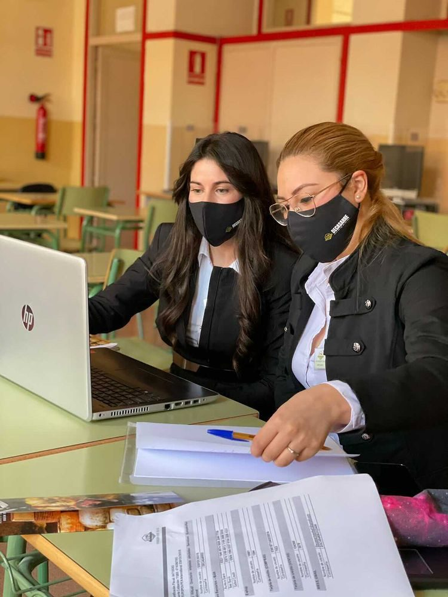
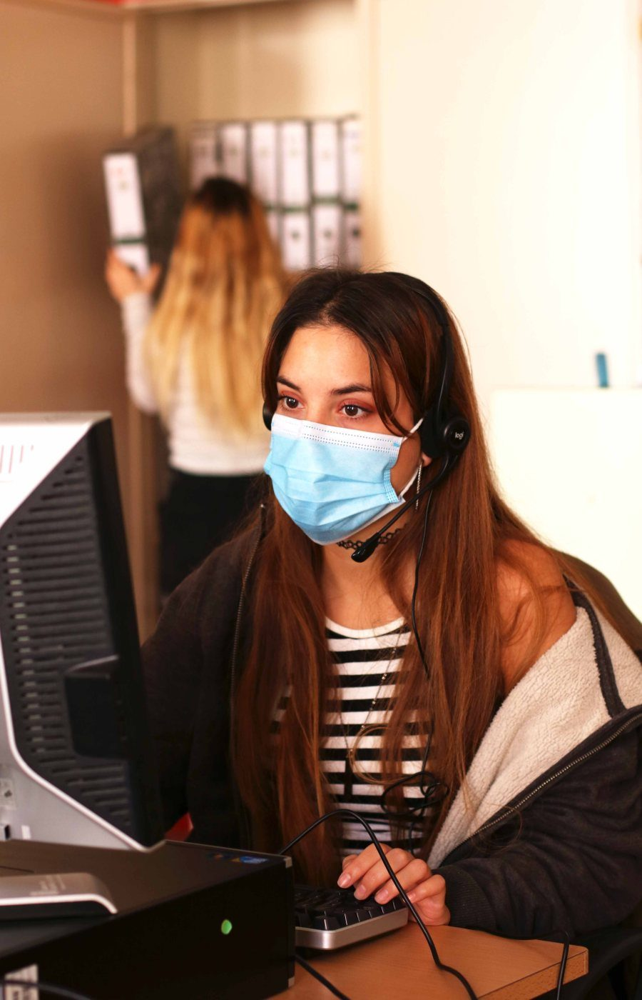
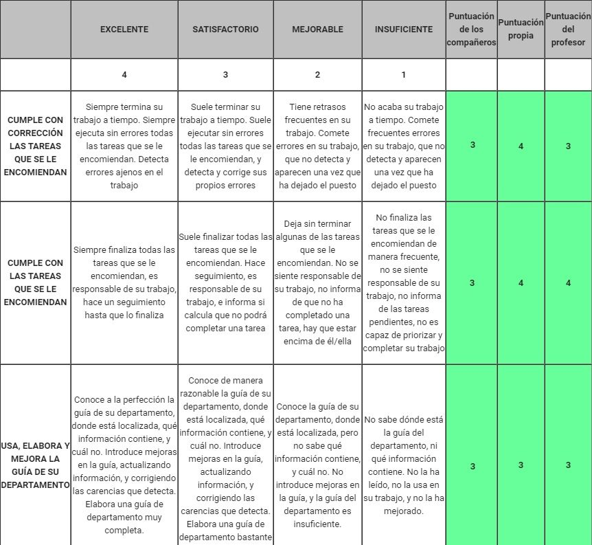

Nuestro sistema educativo se basa sobre todo en el conocimiento. El conocimiento en el mundo empresarial cambia constantemente: cada día aparecen nuevas leyes, nuevas formas de trabajar, nuevos programas informáticos. Así que cuando el alumnado aprende, la fecha de caducidad de ese conocimiento está cerca. Pero hay algunas competencias que ayudarán al alumnado a ser buenos profesionales, sea cual sea el camino que elijan y vengan los cambios que vengan. Creatividad, capacidad de resolución de problemas, pensamiento crítico, habilidades comunicativas, versatilidad, resiliencia… Normalmente las personas no llegan a desarrollar ni explorar estas soft skills a través de la educación formal clásica.
Del mismo modo, el mercado laboral exige competencias digitales para cada uno de los puestos del área de administración de empresas. Nuestro alumnado necesita saber usar un ordenador, manejar programas de contabilidad y de facturación. Necesita saber teletrabajar, comunicarse en línea, gestionar redes sociales y utilizar herramientas de banca electrónica.
Por eso en nuestro centro, el IES ARCA REAL de Valladolid, hemos puesto en marcha una empresa simulada en un aula, como herramienta pedagógica para formar a nuestro alumnado en la empresa de una manera práctica (learning by doing, aprender haciendo). Conseguimos que gestionen su propia empresa, realizando tareas empresariales reales como comprar y vender sus productos virtuales por todo el mundo, y conociendo los entresijos de dirigir una pequeña empresa (las pymes representan el 98% de las empresas de España). Al gestionar el día a día de una empresa, el alumnado no solo desarrolla competencias empresariales, soft skills y mentalidad emprendedora, sino que también identifica itinerarios profesionales que encajan con sus intereses y talentos.
Esta empresa virtual, que se llama DECASARRE, está dividida en los departamentos habituales y reproduce todas las actividades de una empresa real: marketing, contabilidad, recursos humanos, ventas, compras, finanzas… Pertenecemos a una red internacional de empresas simuladas, con más de 7.000 empresas en todo el mundo. Aquí en España esta red está gestionada por la Fundación Inform, y a nivel internacional la gestiona Europen PEN. Usamos una plataforma virtual para comprar y vender productos a otras empresas simuladas. En esta plataforma virtual encontramos todos los agentes habituales con los que una empresa trabaja en la vida real: distintos bancos, proveedores, clientes, servicios de suministro, servicios de transporte, instituciones públicas… Por ejemplo, se pueden presentar las declaraciones de IVA, que después se cargan (o se devuelven, en su caso) en la cuenta bancaria virtual.
Como puedes ver, aunque no se produce ninguna entrega real de mercancías, el resto del comercio es real: se hacen pedidos, se emiten facturas, se transfieren pagos, se mantiene la contabilidad… Usamos programas informáticos y herramientas en línea para la contabilidad, la banca, la presentación de impuestos, la contratación de servicios de transporte… Como resultado, el alumnado se familiariza con el uso de la tecnología para las actividades empresariales y, al mismo tiempo, desarrolla sus competencias informáticas.
La empresa simulada prepara al alumnado para el mercado laboral. Pone en práctica, en un entorno laboral cambiante, la teoría que han aprendido en la seguridad del aula, y a menudo supone una primera experiencia laboral. El alumnado aprende muchas competencias comerciales y emprendedoras: administración, contabilidad y finanzas, recursos humanos, marketing, competencias digitales y comunicativas. Creemos que la empresa simulada refuerza los aprendizajes y el rendimiento académico, reaviva el interés por la educación y aumenta el deseo de desarrollo personal y de aprendizaje permanente. El alumnado participa activamente en el proceso de aprendizaje y en la toma de decisiones, lo que incrementa la motivación, la iniciativa, la creatividad, la responsabilidad y otras soft skills. Las empresas simuladas son también el marco ideal para formar y evaluar esas soft skills que se observan mientras el alumnado trabaja: iniciativa, organización de tareas, trabajo colaborativo, resolución de problemas, toma de decisiones, comunicación, versatilidad… todas ellas muy valoradas por las empresas. Es además una metodología muy flexible, que permite distintos niveles educativos, experiencias laborales y ritmos de aprendizaje dentro de la misma empresa simulada, con la posibilidad de diseñar itinerarios de aprendizaje individuales.

Además, integramos el uso del inglés en las actividades diarias de la empresa simulada. Gracias a la plataforma virtual y a la red internacional de empresas simuladas, el alumnado puede llevar a cabo todo tipo de comunicaciones en inglés, adaptándose siempre a su nivel y capacidades. Los empleados de DECASARRE aprenden inglés usándolo, lo que hace su aprendizaje significativo, a diferencia de la metodología tradicional de enseñanza de idiomas. Creemos firmemente que con este proyecto de simulación bilingüe podemos marcar la diferencia en la formación de nuestro alumnado: es una inmersión real en un entorno internacional. No hablamos de rellenar huecos en una frase, hablamos de usar el inglés (u otros idiomas) a diario dentro de la actividad habitual de la empresa virtual. Podemos interactuar en tiempo real con alumnado y empresas simuladas de otros países sin movernos del centro.
El alumnado también crea y mantiene una página web en inglés (www.decasarre.com) para aumentar nuestras ventas internacionales. Dentro de la web hemos creado una nueva tienda virtual, que facilita mucho la venta a empresas de otros países. Allí tenemos también un blog, que actualizamos periódicamente con publicaciones en inglés y español.
Tanto Inform como Europen organizan eventos internacionales, y hay muchas ferias internacionales a las que podemos asistir, ahora de forma virtual debido a la pandemia. Esas ferias virtuales ofrecen al alumnado la oportunidad de exponer y comercializar los productos y servicios de sus empresas en un mercado competitivo, ante colegas locales e internacionales.
Este proyecto aporta flexibilidad a la educación, ya que nos permite trabajar aspectos no incluidos en los currículos oficiales, que a veces tardan demasiado en adaptarse a una realidad empresarial en constante cambio. Por ejemplo, permite a nuestro alumnado trabajar con nuevos métodos de pago, como las transferencias SEPA y los adeudos directos SEPA, en lugar de la tradicional letra de cambio o los cheques, que ya apenas se usan. Podemos presentar declaraciones de impuestos de forma electrónica, algo obligatorio en España, y gracias a la plataforma virtual nuestro alumnado practica todo esto. Podríamos explicárselo, quizá mostrarles un vídeo, pero gracias a esta plataforma realmente pueden HACERLO. Nuestro alumnado también gestiona las redes sociales desde un punto de vista profesional. La mayoría tiene cuentas en redes y cree ser experta, pero muchas veces no sabe cómo conectar con la gente, cómo promocionar publicaciones, cómo crear contenido de calidad, cómo analizar y usar las estadísticas o qué normas hay que seguir en internet. Este año ganamos el concurso de redes sociales organizado por Europen para la Semana #EUVocationalSkills; el tema era crear publicaciones que empezaran con «I love practice enterprise because…». Y esta fue nuestra propuesta (canta uno de nuestros empleados: creemos en promover y aprovechar todos los talentos de nuestro alumnado, aunque no estén directamente relacionados con el trabajo).
Además, al desarrollar este proyecto en un entorno virtual y digital, preparamos a nuestro alumnado para ser competente digitalmente y lo formamos para afrontar otra realidad empresarial surgida tras la pandemia: el teletrabajo. Están preparados para trabajar desde casa, comunicarse en línea y usar herramientas de videoconferencia. Así, incluso cuando parte del alumnado tuvo que quedarse en casa por estar confinado, ¡pudimos seguir trabajando duro!
Antes de abandonar la empresa simulada, y cada vez que el alumnado cambia de departamento, realizamos una evaluación del desempeño, donde se ponen a prueba esas competencias digitales, comunicativas y soft skills, de modo que el alumnado sabe qué competencias posee y cuáles le queda por desarrollar. Este año hemos utilizado Corubrics, un complemento para las hojas de cálculo de Google que se usa para evaluar al alumnado con una rúbrica diseñada por el profesorado, y que también permite la autoevaluación y la coevaluación. Automatiza todo el proceso de evaluación: el profesorado diseña la rúbrica en Google Sheets, añade los nombres y correos del alumnado, y el complemento crea un formulario de Google con la rúbrica, lo envía al alumnado, procesa los datos y, finalmente, envía a cada estudiante sus resultados personalizados.

Así es como en el IES ARCA REAL dotamos a nuestro alumnado de las competencias que creemos que necesitará para afrontar con éxito el mercado laboral. Queremos que salgan del centro con un sello de calidad, como futuros y excelentes profesionales que han tenido una primera experiencia laboral en un entorno internacional, y que han tenido la oportunidad de explorar y desarrollar las soft skills más demandadas —creatividad, autoorganización, versatilidad, inteligencia emocional— que les acompañarán el resto de sus vidas.